Traffic is inherently dangerous, with around 1.19 million fatalities annually. Automotive Mediated Reality (AMR) can enhance driving safety by overlaying critical information (e.g., outlines, icons, text) on key objects to improve awareness, altering objects' appearance to simplify traffic situations, and diminishing their appearance to minimize distractions. However, real-world AMR evaluation remains limited due to technical challenges. To fill this sim-to-real gap, we present MIRAGE, an open-source tool that enables real-time AMR in real vehicles. MIRAGE implements 15 effects across the AMR spectrum of augmented, diminished, and modified reality using state-of-the-art computational models for object detection and segmentation, depth estimation, and inpainting. In an on-road expert user study (N=9) of MIRAGE, participants enjoyed the AMR experience while pointing out technical limitations and identifying use cases for AMR. We discuss these results in relation to prior work and outline implications for AMR ethics and interaction design.
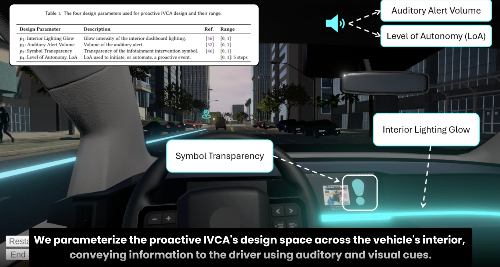
ProVoice: Designing Proactive Functionality for In-Vehicle Conversational Assistants using Multi-Objective Bayesian Optimization to Enhance Driver Experience
Josh Susak, Yifu Liu, Pascal Jansen, and Mark Colley
The next step for In-vehicle Conversational Assistants (IVCAs) will be their capability to initiate and automate proactive system interactions throughout journeys. However, diverse drivers make it challenging to design voice interventions tailored towards individual on-road expectations. This paper evaluates the effectiveness of Human-in-the-Loop (HITL) Multi-Objective Bayesian Optimization (MOBO) in design by implementing ProVoice: a Virtual Reality (VR) driving simulator integrating MOBO to investigate the effects of IVCA design variants on perceived mental demand, predictability, and usefulness. By reporting the Pareto Front from a within-subjects VR study (N=19), this paper proposes optimal design trade-offs. Follow-up analysis demonstrates MOBO's success in discovering effective intervention strategies, with reduced participant mental demand, alongside enhanced predictability and usefulness while engaging with the proactive IVCA. Implications for computational techniques in future research on proactive intervention strategies are discussed. ProVoice can extend to include alternative design parameters and driving scenarios, encouraging intervention design on a broad scale.
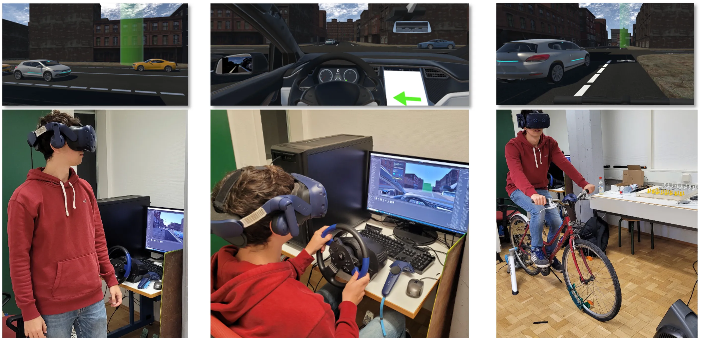
eHMI for All - Investigating the Effect of External Communication of Automated Vehicles on Pedestrians, Manual Drivers, and Cyclists in Virtual Reality
Mark Colley, Simon Kopp, Debargha Dey, Pascal Jansen, and Enrico Rukzio
With automated vehicles (AVs), the absence of a human operator could necessitate external Human-Machine Interfaces (eHMIs) to communicate with other road users. Existing research primarily focuses on pedestrian-AV interactions, with limited attention given to other road users, such as cyclists and drivers of manually driven vehicles. So far, no studies have compared the effects of eHMIs across these three road user roles. Therefore, we conducted a within-subjects virtual reality experiment (N=40), evaluating the subjective and objective impact of an eHMI communicating the AV's intention to pedestrians, cyclists, and drivers under various levels of distraction (no distraction, visual noise, interference). eHMIs positively influenced safety perceptions, trust, perceived usefulness, and mental demand across all roles. While distraction and road user roles showed significant main effects, interaction effects were only observed in perceived usability. Thus, a unified eHMI design is effective, facilitating the standardization and broader adoption of eHMIs in diverse traffic.
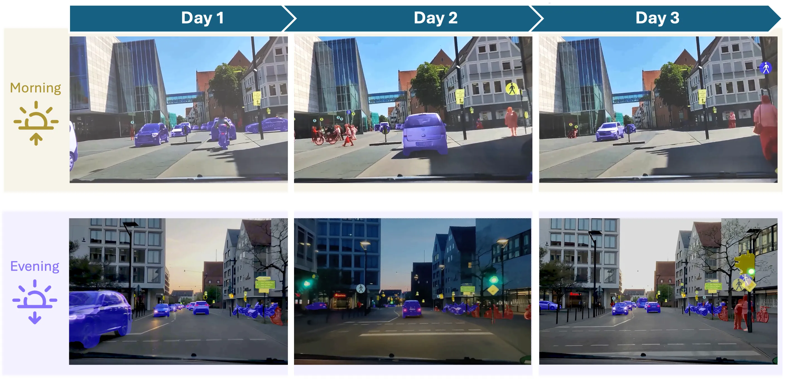
Longitudinal Effects of Visualizing Uncertainty of Situation Detection and Prediction of Automated Vehicles on User Perceptions
Pascal Jansen*, Mark Colley*, Max Rädler*, Jonas Schwedler, and Enrico Rukzio *joint first-author
This paper explores the impact of uncertainty visualizations in automated vehicle (AV) functionality on user perceptions over a three-day longitudinal study. Participants (N=50) watched real-world driving videos twice daily, in the morning and evening. These videos depicted morning and evening commutes, featuring visualizations of AVs' pedestrian detection, vehicle recognition, and pedestrian intention prediction. We measured perceived safety, trust, mental workload, and cognitive load using a within-subjects design. Results show increased perceived safety and trust over time, with higher ratings in the evening sessions, reflecting greater predictability and user confidence in AV by the study's end. However, inconsistencies in pedestrian detection and intention prediction led to mixed reactions, highlighting the need for visualization stability and clarity refinement. Participants also desired a feature indicating the AV's intended path and options for manual intervention. Our findings suggest transparency and usability in AV visualizations can foster trust and perceived safety, informing future AV interface design.
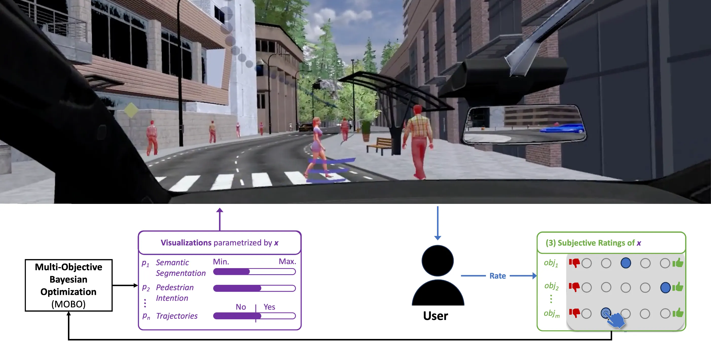
OptiCarVis: Improving Automated Vehicle Functionality Visualizations Using Bayesian Optimization to Enhance User Experience
Pascal Jansen*, Mark Colley*, Svenja Krauß, Daniel Hirschle, and Enrico Rukzio *joint first-author
In Proceedings of CHI’25 Honorable Mention Award (top 5%)
Automated vehicle (AV) acceptance relies on their understanding via feedback. While visualizations aim to enhance user understanding of AV's detection, prediction, and planning functionalities, establishing an optimal design is challenging. Traditional "one-size-fits-all" designs might be unsuitable, stemming from resource-intensive empirical evaluations. This paper introduces OptiCarVis, a set of Human-in-the-Loop (HITL) approaches using Multi-Objective Bayesian Optimization (MOBO) to optimize AV feedback visualizations. We compare conditions using eight expert and user-customized designs for a Warm-Start HITL MOBO. An online study (N=117) demonstrates OptiCarVis's efficacy in significantly improving trust, acceptance, perceived safety, and predictability without increasing cognitive load. OptiCarVis facilitates a comprehensive design space exploration, enhancing in-vehicle interfaces for optimal passenger experiences and broader applicability.
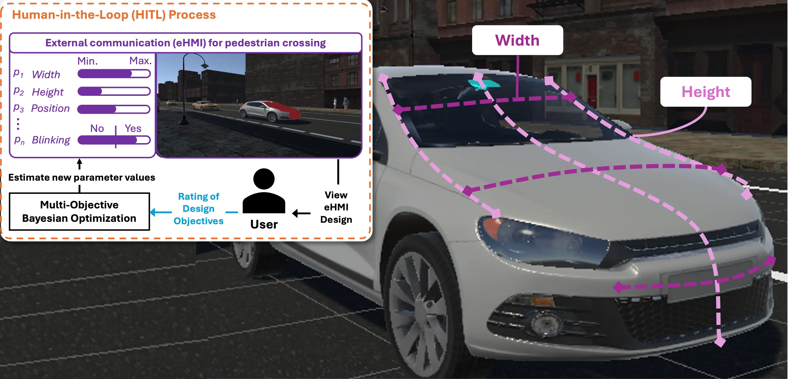
Improving External Communication of Automated Vehicles Using Bayesian Optimization
Mark Colley*, Pascal Jansen*, Mugdha Keskar, and Enrico Rukzio *joint first-author
The absence of a human operator in automated vehicles (AVs) may require external Human-Machine Interfaces (eHMIs) to facilitate communication with other road users in uncertain scenarios, for example, regarding the right of way.
Given the plethora of adjustable parameters, balancing visual and auditory elements is crucial for effective communication with other road users. With N=37 participants, this study employed multi-objective Bayesian optimization to enhance eHMI designs and improve trust, safety perception, and mental demand. By reporting the Pareto front, we identify optimal design trade-offs. This research contributes to the ongoing standardization efforts of eHMIs, supporting broader adoption.
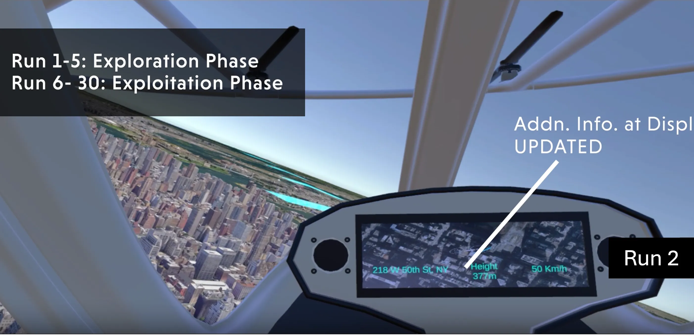
Fly Away: Evaluating the Impact of Motion Fidelity on Optimized User Interface Design via Bayesian Optimization in Automated Urban Air Mobility Simulations
Luca-Maxim Meinhardt, Clara Schramm, Pascal Jansen, Mark Colley, and Enrico Rukzio
Automated Urban Air Mobility (UAM) can improve passenger transportation and reduce congestion, but its success depends on passenger trust. While initial research addresses passengers' information needs, questions remain about how to simulate air taxi flights and how these simulations impact users and interface requirements.
We conducted a between-subjects study (N=40), examining the influence of motion fidelity in Virtual-Reality-simulated air taxi flights on user effects and interface design. Our study compared simulations with and without motion cues using a 3-Degrees-of-Freedom motion chair. Optimizing the interface design across six objectives, such as trust and mental demand, we used multi-objective Bayesian optimization to determine the most effective design trade-offs.
Our results indicate that motion fidelity decreases users' trust, understanding, and acceptance, highlighting the need to consider motion fidelity in future UAM studies to approach realism. However, minimal evidence was found for differences or equality in the optimized interface designs, suggesting personalized interface designs.
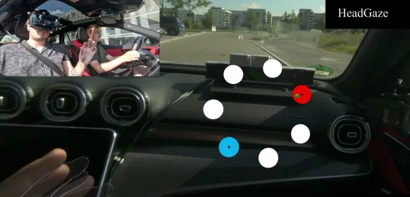
Bumpy Ride? Understanding the Effects of External Forces on Spatial Interactions in Moving Vehicles
Markus Sasalovici, Albin Zeqiri, Robin Connor Schramm, Oscar Javier Ariza Nuñez, Pascal Jansen, Jann Philipp Freiwald, Mark Colley, Christian Winkler, and Enrico Rukzio
As the use of Head-Mounted Displays in moving vehicles increases, passengers can immerse themselves in visual experiences independent of their physical environment. However, interaction methods are susceptible to physical motion, leading to input errors and reduced task performance. This work investigates the impact of Gforces, vibrations, and unpredictable maneuvers on 3D interaction
methods. We conducted a field study with 24 participants in both stationary and moving vehicles to examine the effects of vehicle motion on four interaction methods: (1) Gaze&Pinch, (2) DirectTouch,
(3) Handray, and (4) HeadGaze. Participants performed selections in a Fitts’ Law task. Our findings reveal a significant effect of vehicle motion on interaction accuracy and duration across the tested combinations of Interaction Method × Road Type × Curve Type. We
found a significant impact of movement on throughput, error rate, and perceived workload. Finally, we propose future research considerations and recommendations on interaction methods during vehicle movement.
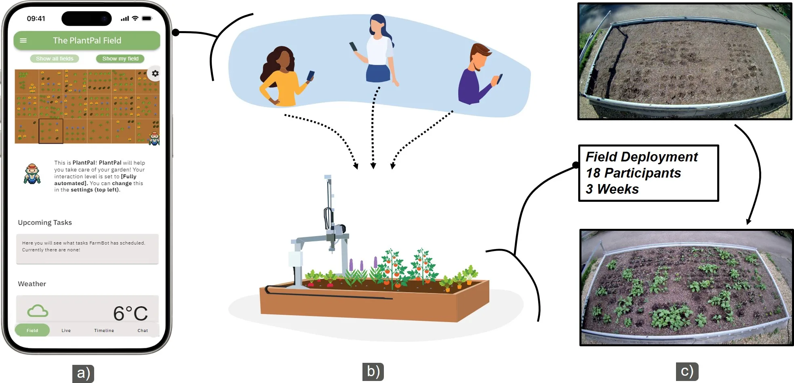
PlantPal: Leveraging Precision Agriculture Robots to Facilitate Remote Engagement in Urban Gardening
Albin Zeqiri, Julian Britten, Clara Schramm, Pascal Jansen, Michael Rietzler, and Enrico Rukzio
In Proceedings of CHI’25
Urban gardening is widely recognized for its numerous health and environmental benefits. However, the lack of suitable garden spaces, demanding daily schedules, and limited gardening expertise present major roadblocks for citizens looking to engage in urban gardening. While prior research has explored smart home solutions to support urban gardeners, these approaches currently do not fully address these practical barriers. In this paper, we present PlantPal, a system that enables the cultivation of garden spaces irrespective of one's location, expertise level, or time constraints. PlantPal enables the shared operation of a precision agriculture robot (PAR) that is equipped with garden tools and a multi-camera system. Insights from a 3-week deployment (N=18) indicate that PlantPal facilitated the integration of gardening tasks into daily routines, fostered a sense of connection with one's field, and provided an engaging experience despite the remote setting. We contribute design considerations for future robot-assisted urban gardening concepts.
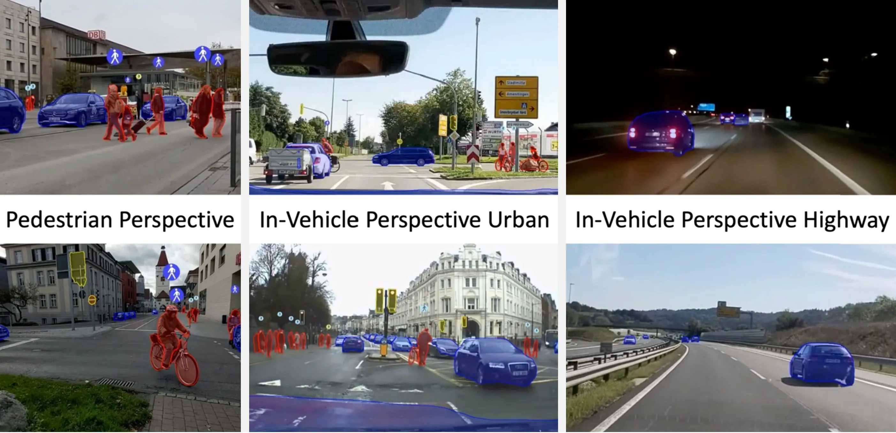
Visualizing Imperfect Situation Detection and Prediction in Automated Vehicles: Understanding Users’ Perceptions via User-Chosen Scenarios
Pascal Jansen*, Mark Colley*, Tim Pfeifer, and Enrico Rukzio *joint first-author
User acceptance is essential for successfully introducing automated vehicles (AVs). Understanding the technology is necessary to overcome skepticism and achieve acceptance. This could be achieved by visualizing (uncertainties of) AV's internal processes, including situation perception, prediction, and trajectory planning. At the same time, relevant scenarios for communicating the functionalities are unclear. Therefore, we developed EduLicit to concurrently elicit relevant scenarios and evaluate the effects of visualizing AV's internal processes. A website capable of showing annotated videos enabled this methodology. With it, we replicated the results of a previous online study (N=76) using pre-recorded real-world videos. Additionally, in a second online study (N=22), participants uploaded scenarios they deemed challenging for AVs using our website. Most scenarios included large intersections and/or multiple vulnerable road users. Our work helps assess scenarios perceived as challenging for AVs by the public and, simultaneously, can help educate the public about visualizations of the functionalities of current AVs.
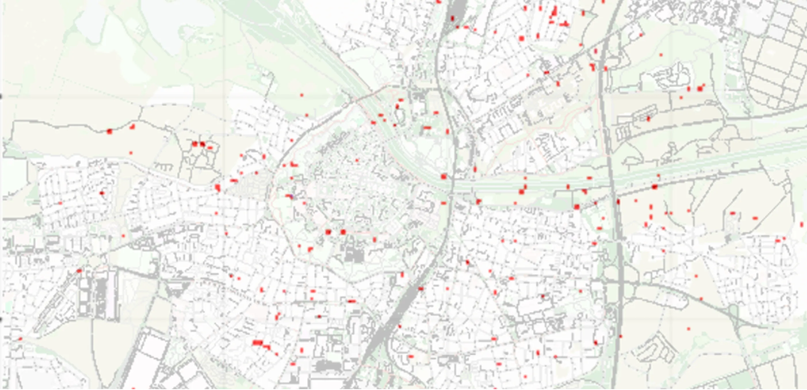
PedSUMO: Simulacra of Automated Vehicle-Pedestrian Interaction Using SUMO To Study Large-Scale Effects
Mark Colley, Julian Czymmeck, Mustafa Kücükkocak, Pascal Jansen, and Enrico Rukzio
As automated vehicles become more widespread but lack a driver to communicate in uncertain situations, external communication, for example, via LEDs or displays, is evaluated. However, the concepts are mostly evaluated in simple scenarios, such as one person trying to cross in front of one automated vehicle. The traditional empirical approach fails to study the large-scale effects of these in this not-yet-real scenario. Therefore, we built PedSUMO, an enhancement to SUMO for the simulacra of automated vehicles' effects on public traffic, specifically how pedestrian attributes affect their respect for automated vehicle priority at unprioritized crossings. We explain the algorithms used and the derived parameters relevant to the crossing. We open-source our code under https://github.com/M-Colley/pedsumo and demonstrate an initial data collection and analysis of Ingolstadt, Germany.
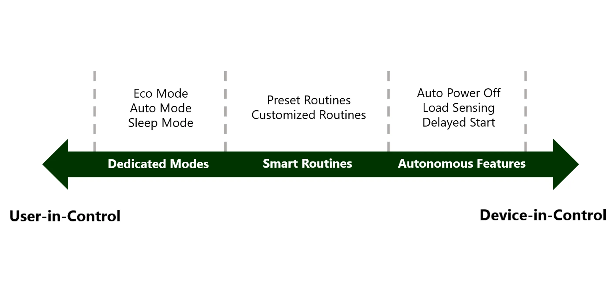
'Eco Is Just Marketing': Unraveling Everyday Barriers to the Adoption of Energy-Saving Features in Major Home Appliances
Albin Zeqiri, Pascal Jansen, Jan Ole Rixen, Michael Rietzler, and Enrico Rukzio
Energy-saving features (ESFs) represent a simple way to reduce the resource consumption of home appliances (HAs), yet they remain under-utilized. While prior research focused on increasing the use of ESFs through behavior change interventions, there is currently no clarity on the barriers that restrict their utilization in the first place. To bridge this gap, we conducted a qualitative analysis of 349 Amazon product reviews and 98 Reddit discussions, yielding three qualitative themes that showcase how users perceive, interact with, and evaluate ESFs in HAs. Based on these themes, we derived frequent barriers to ESF adoption, which guided a subsequent expert focus group (N=5) to assess the suitability of behavior change interventions and potential alternative strategies for ESF adoption. Our findings deepen the understanding of everyday barriers surrounding ESFs and enable the targeted design and assessment of interventions for future HAs.
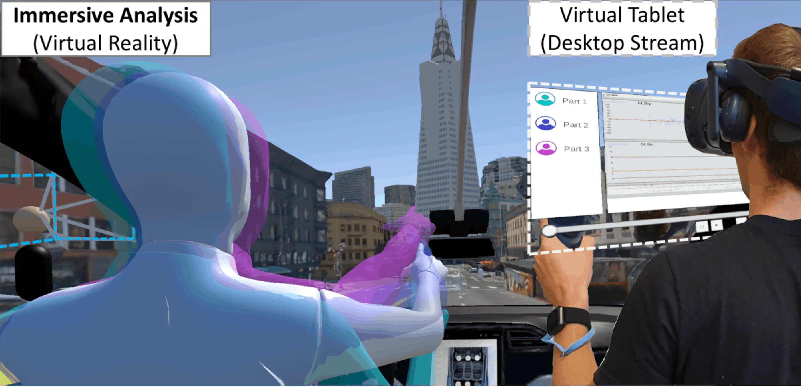
AutoVis: Enabling Mixed-Immersive Analysis of Automotive User Interface Interaction Studies
Pascal Jansen, Julian Britten, Alexander Häusele, Thilo Segschneider, Mark Colley, and Enrico Rukzio
Automotive user interface (AUI) evaluation becomes increasingly complex due to novel interaction modalities, driving automation, heterogeneous data, and dynamic environmental contexts. Immersive analytics may enable efficient explorations of the resulting multilayered interplay between humans, vehicles, and the environment. However, no such tool exists for the automotive domain. With AutoVis, we address this gap by combining a non-immersive desktop with a virtual reality view enabling mixed-immersive analysis of AUIs. We identify design requirements based on an analysis of AUI research and domain expert interviews (N=5). AutoVis supports analyzing passenger behavior, physiology, spatial interaction, and events in a replicated study environment using avatars, trajectories, and heatmaps. We apply context portals and driving-path events as automotive-specific visualizations. To validate AutoVis against real-world analysis tasks, we implemented a prototype, conducted heuristic walkthroughs using authentic data from a case study and public datasets, and leveraged a real vehicle in the analysis process.
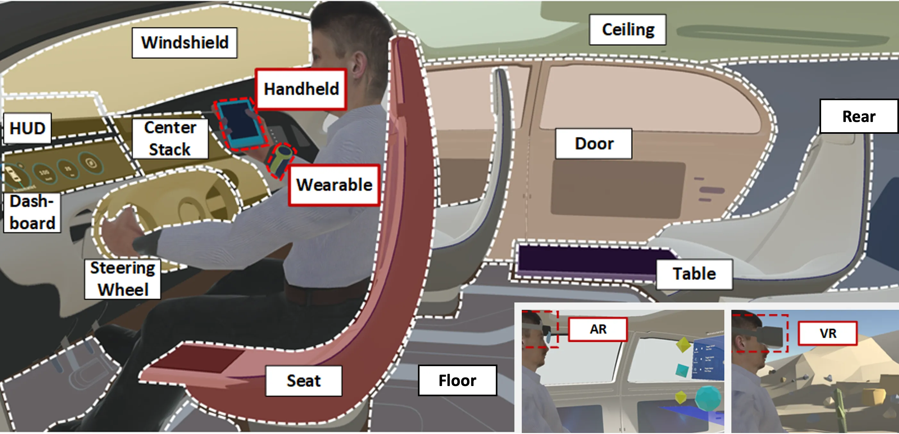
A Design Space for Human Sensor and Actuator Focused In-Vehicle Interaction Based on a Systematic Literature Review
Automotive user interfaces constantly change due to increasing automation, novel features, additional applications, and user demands. While in-vehicle interaction can utilize numerous promising modalities, no existing overview includes an extensive set of human sensors and actuators and interaction locations throughout the vehicle interior. We conducted a systematic literature review of 327 publications leading to a design space for in-vehicle interaction that outlines existing and lack of work regarding input and output modalities, locations, and multimodal interaction. To investigate user acceptance of possible modalities and locations inferred from existing work and gaps unveiled in our design space, we conducted an online study (N=48). The study revealed users' general acceptance of novel modalities (e.g., brain or thermal activity) and interaction with locations other than the front (e.g., seat or table). Our work helps practitioners evaluate key design decisions, exploit trends, and explore new areas in the domain of in-vehicle interaction.
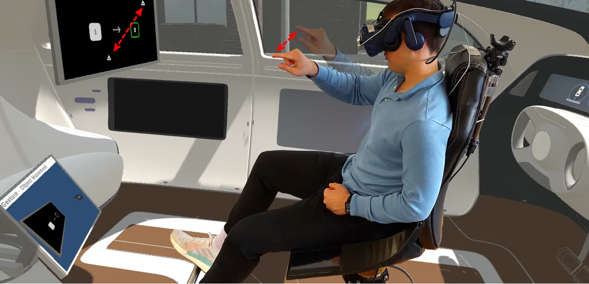
SwiVR-Car-Seat: Exploring Vehicle Motion Effects on Interaction Quality in Virtual Reality Automated Driving Using a Motorized Swivel Seat
Mark Colley, Pascal Jansen, Enrico Rukzio, and Jan Gugenheimer
Autonomous vehicles provide new input modalities to improve interaction with in-vehicle information systems. However, due to the road and driving conditions, the user input can be perturbed, resulting in reduced interaction quality. One challenge is assessing the vehicle motion effects on the interaction without an expensive high-fidelity simulator or a real vehicle. This work presents SwiVR-Car-Seat, a low-cost swivel seat to simulate vehicle motion using rotation. In an exploratory user study (N=18), participants sat in a virtual autonomous vehicle and performed interaction tasks using the input modalities touch, gesture, gaze, or speech. Results show that the simulation increased the perceived realism of vehicle motion in virtual reality and the feeling of presence. Task performance was not influenced uniformly across modalities; gesture and gaze were negatively affected while there was little impact on touch and speech. The findings can advise automotive user interface design to mitigate the adverse effects of vehicle motion on the interaction.
The Social Engineer: An Immersive Virtual Reality Educational Game to Raise Social Engineering Awareness
As system infrastructures are becoming more secure against technical attacks, it is more difficult for attackers to overcome them with technical means. Social engineering instead exploits the human factor of information security and can have a significant impact on organizations. The lack of awareness about social engineering favors the successful realization of social engineering attacks, as employees do not recognize them as such early enough, resulting in high costs for the affected company. Current training approaches and awareness courses are limited in their versatility and create little motivation for employees to deal with the topic. The high immersion of virtual reality can improve learning in this context. We created The Social Engineer, an immersive educational game in virtual reality, to raise awareness and to sensitize players about social engineering. The player impersonates a penetration tester and conducts security audits in a virtually simulated company. The game consists of a detailed game world containing three distinct missions that require the player to apply different social engineering attack methods. Our concept enables the game to be highly extensible and flexible regarding different playable scenarios and settings. The Social Engineer can potentially benefit companies as an immersive self-training tool for their employees, support security experts in teaching social engineering awareness as part of a comprehensive training course, and entertain interested individuals by leveraging fun and innovative gameplay mechanics.
Head-Mounted Displays (HMDs) are the dominant form of enabling Virtual Reality (VR) and Augmented Reality (AR) for personal use. One of the biggest challenges of HMDs is the exclusion of people in the vicinity, such as friends or family. While recent research on asymmetric interaction for VR HMDs has contributed to solving this problem in the VR domain, AR HMDs come with similar but also different problems, such as conflicting information in visualization through the HMD and projection. In this work, we propose ShARe, a modified AR HMD combined with a projector that can display augmented content onto planar surfaces to include the outside users (non-HMD users). To combat the challenge of conflicting visualization between augmented and projected content, ShARe visually aligns the content presented through the AR HMD with the projected content using an internal calibration procedure and a servo motor. Using marker tracking, non-HMD users are able to interact with the projected content using touch and gestures. To further explore the arising design space, we implemented three types of applications (collaborative game, competitive game, and external visualization). ShARe is a proof-of-concept system that showcases how AR HMDs can facilitate interaction with outside users to combat exclusion and instead foster rich, enjoyable social interactions.